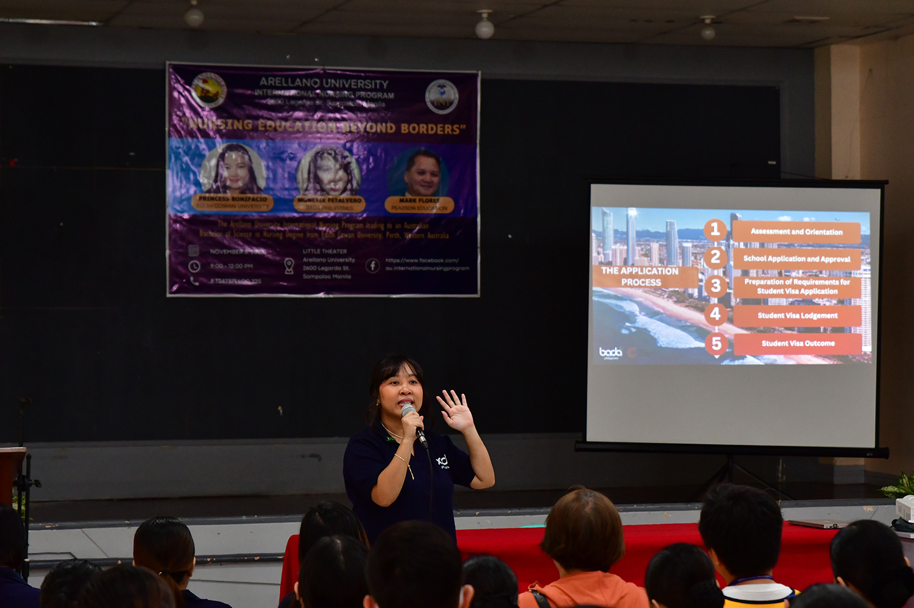
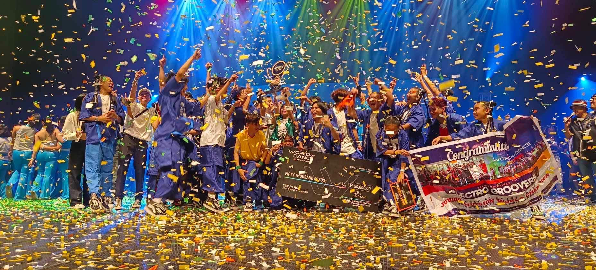

What's new in Arellano?
EduQuest Challenge: Igniting Minds Across Schools – Science, Math, & English Quiz Bee
Posted: April 29, 2024
On April 25, 2024, Arellano University – Andres Bonifacio Campus, one of the eight participating schools, sent three delegates to compete in the "EduQuest Challenge: Igniting Minds Across Schools – Science, Math, & English Quiz Bee" held in Far Eastern University Roosevelt Cainta.
Three standout students from Arellano University – Andres Bonifacio Campus excelled in different subjects:
Ma. Cristina B. Saborrido earned 3rd place in English, showcasing unwavering determination and eloquence.
Aaron Justin Lei B. Alay secured an impressive 2nd place in Mathematics, demonstrating keen intellect and strategic prowess.
Lorraine Claire F. Diongco emerged victorious in Science, clinching the overall 1st place with her critical thinking and determination.
Under the guidance of Mr. Francis Alfred F. Suyod, these students were well-prepared for the competition, proudly representing their campus during the awarding ceremony. Their achievements filled the campus with pride and confidence. Hail to the Chiefs!
AU-INP Hosts "Nursing Education Beyond Borders" Seminar
Posted: March 27, 2024

Since its inception in 2006, AU-INP has been producing globally competitive nurses through academic partnerships with internationally known prestigious institutions. Last November 6, 2023, INP students and their parents and guardians greatly enjoyed an informative session on what to prepare and expect for their transfer to Edith Cowan University, one of INP’s partner school located in Perth, Australia, after completing their courses in Arellano University.
The event was graciously attended by three speakers who shared their knowledge and valuable insights for a seamless transition to ECU and eventually graduate with an Australian Bachelor of Science in Nursing Degree. The speakers included Ms. Princess Bonifacio, Regional Manager for Southeast Asia of Edith Cowan University, Mr. Mark Flores of Pearson Education, and Ms. Monette Fetalvero of BADA Philippines.
The attendees were further pleased with the question and answer forum at the end of the session and went home delighted with fun facts about ECU, Australia as a country of opportunities, and winning raffle prizes.
- EBDetera
World of Dance Philippines: Juniors Category
Posted: March 22, 2024

Arellano University - Andres Bonifacio Campus Junior High School student, Liana Shayne Ferrer with her dance group, Electro Mover, bagged the Championship title and Best Theme award in the prestigious World of Dance 2024 Junior Category. The aforementioned competition was held at University of the Philippines Diliman, Quezon City last March 10, 2024.